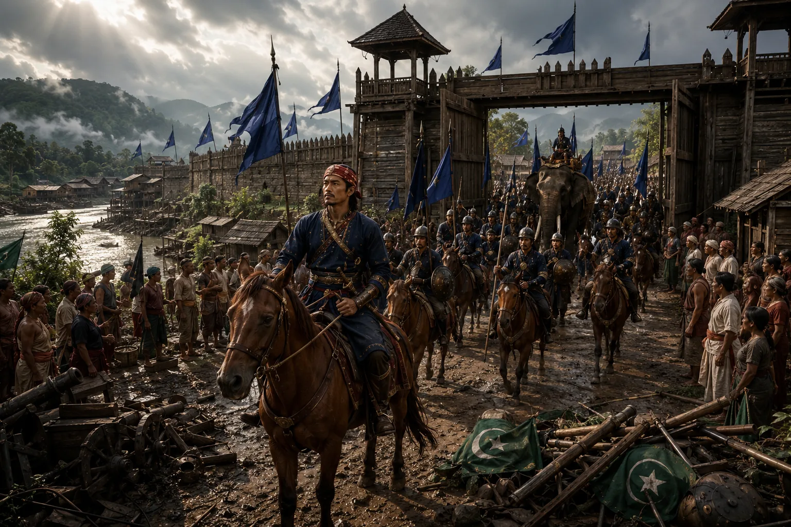

Lachit Borphukan Liberates Guwahati
November 1667 · Against the Mughal Empire

Ahom forces execute a coordinated amphibious night assault, breaching the Mughal ramparts and driving imperial troops out of Guwahati.
Sources have not yet been catalogued for this record.
People: Chakradhwaj Singha (Supangmung), Lachit Borphukan, Syed Firoz Khan